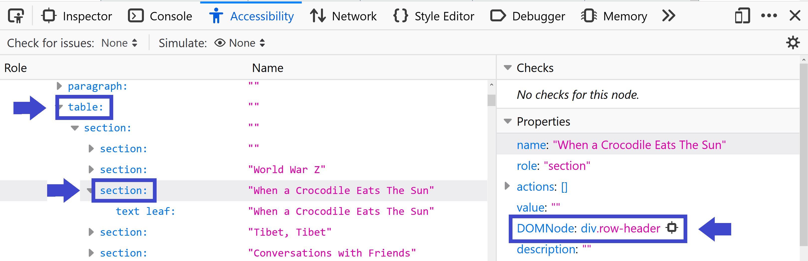
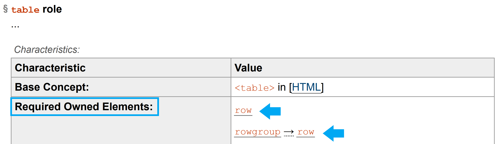
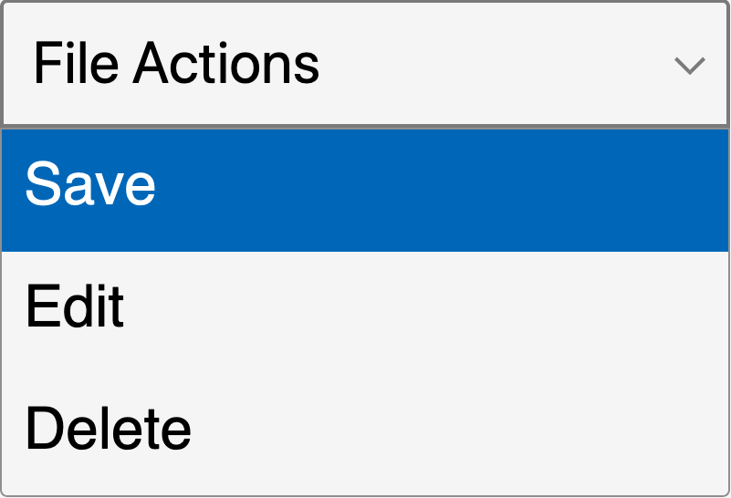
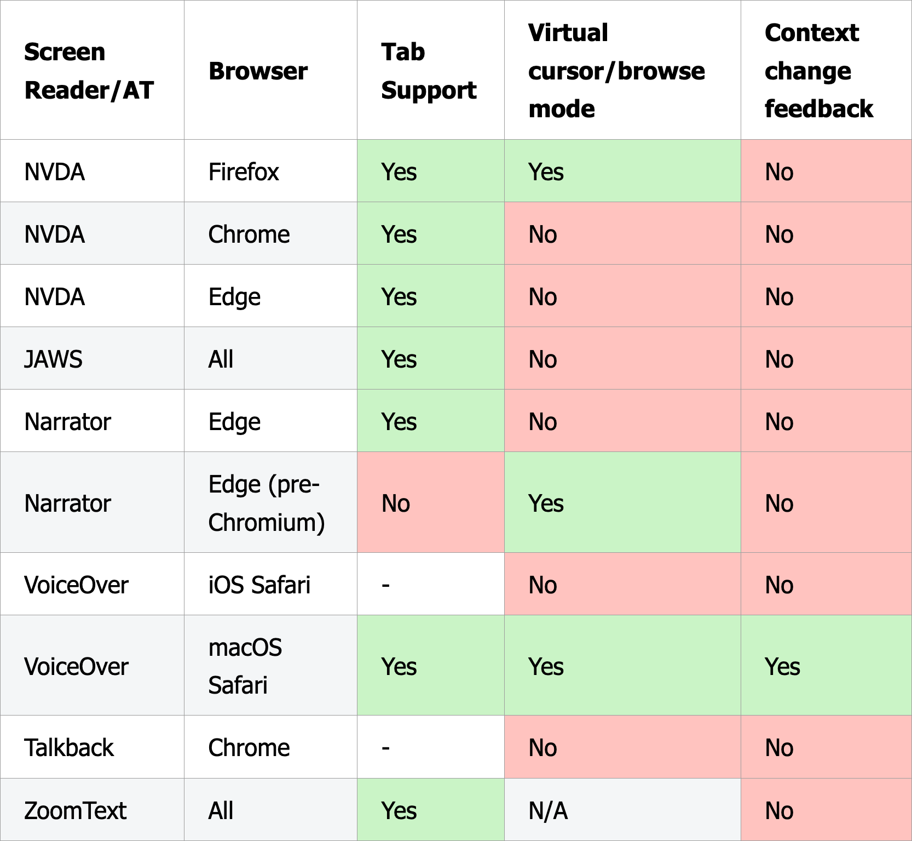
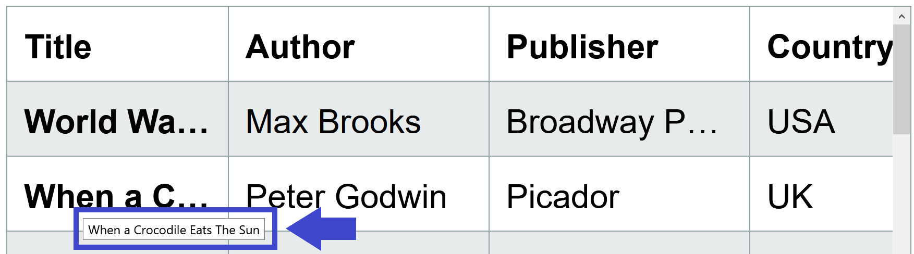
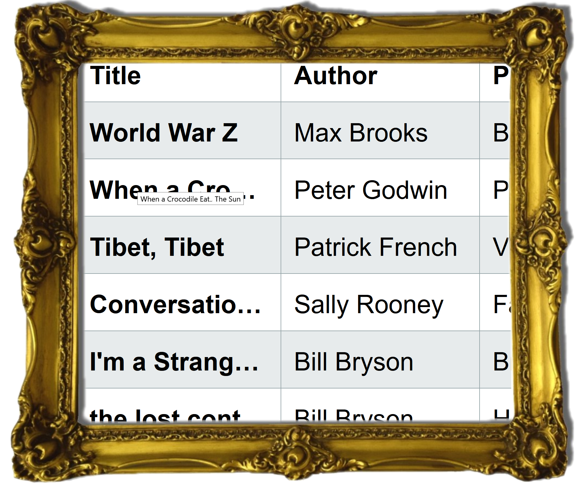
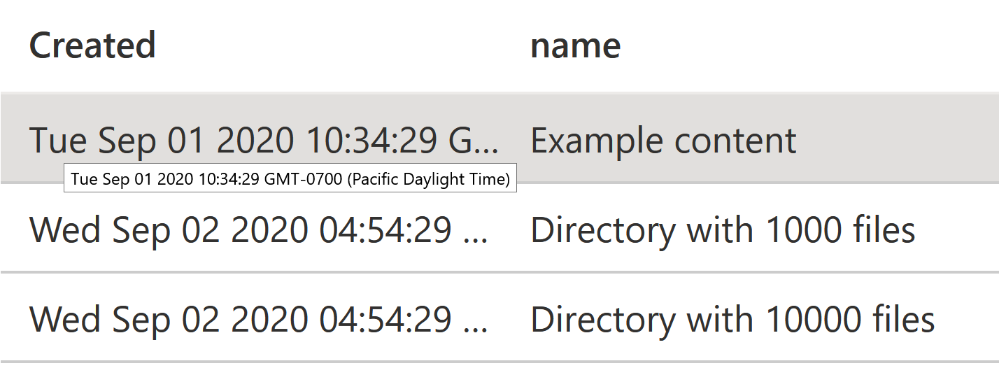
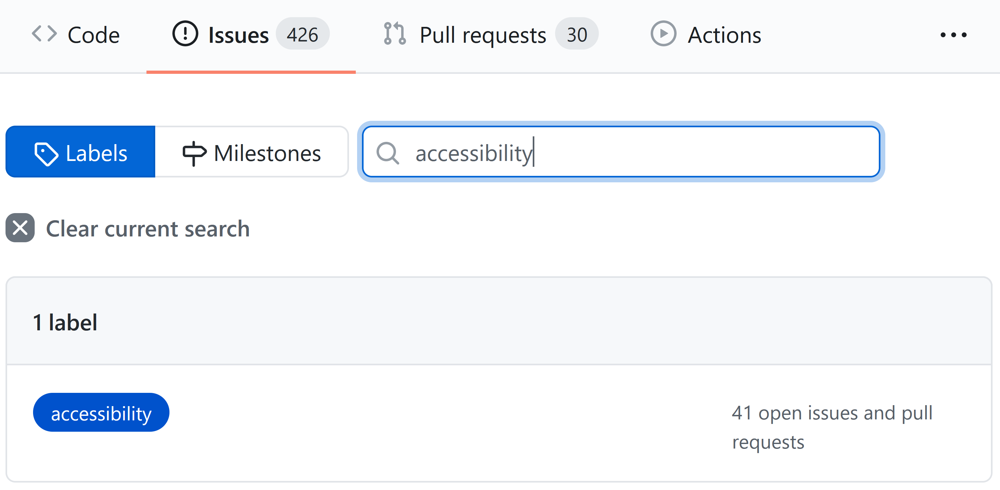

Debugging Broken Accessibility
This talk is not about:
- how to test
- how to fix specific bugs
- tooltips
Why debugging?
The accessibility process (imagination)
- Learn: semantic HTML, tabbing, yay!
- Test
- Fix bugs
- Include everyone!
The accessibility process (reality)
- Learn: semantic HTML, tabbing, yay!
- Testing happens
- ...
- ...
- ... ... what is aria-required-children??!
My learning process:
This talk is about:
frustration.
A better option:
Let's do this.
Our Toolbox:
- Inspect
- Assistive Tech
- Specs
- Github issues
The bugs:
- Semantics
- Focus
- Oops
- Nope
Bug 1: the dreaded <table>

"NVDA's table commands aren't working properly..."
Tools
- Inspect
- Assistive Tech
- Specs
- Github issues
Inspect with Firefox:

Compare in the spec:

Bug 2: the screen reader cursor is "lost"

Tools
- Inspect
- Assistive Tech
- Specs
- Github issues
Does it reproduce?

Full write-up at sarahmhigley.com
Observing focus changes
Menu example page
document.activeElement
or
document.addEventListener('focusin', () => {
console.log(document.activeElement);
});
Bug 3: the screen reader should say...
"VoiceOver isn't reading the index of the menu items"
Tools
- Inspect
- Assistive Tech
- Specs
- Github issues
Do NOT do this:
<button role="menuitem" aria-label="Save, 1 of 3">Save</li>
Compare:
Ask:
- A coworker (in a relevant job)
- A community (slack, twitter)
- User studies
This applies to more than screen readers!
Compare against plain HTML for keyboard, pointer, High Contrast Mode, voice control, etc.
Bug 4: Return of the <table>

"The truncated text is not accessible via keyboard"
Tools
- Inspect
- Assistive Tech
- Specs
- Github issues
Is this a good design?
Don't let designs get away with begging the question.
A website is not an art gallery.

Digging up roots
The value of front-end knowledge
Accessibility practitioner yells at cloud

Look at the structure, not the individuals:
- Is training in accessibility available?
- Is basic accessibility knowledge considered when hiring?
Bad Assistive Tech assumptions
<button role="menuitem" aria-label="Save, 1 of 3">Save</li>
remember this?
Who is doing the testing, and who decides what the experience should be?
- Are disabled people hired?
- Do they stay?
- Are they listened to?
Tooltips in the real world

Is accessibility part of choosing 3rd-party libraries?

Check github for accessibility-related activity
Github checks anyone can do:
- Issue labels
- Fixed, stale, or closed
- Discussion quality
With some help:
This sounds hopeful, but...

This talk is about:
frustration.
...lots of frustration.
...but it's better with friends.